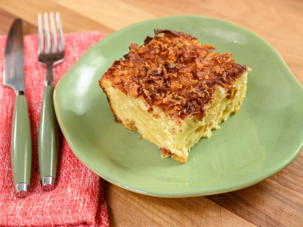

Kugel

Description
Kugel is a cherished dish in Jewish cuisine, renowned for its comforting and versatile nature.
This baked casserole typically features a base of egg noodles or potatoes, bound together with a mixture of eggs, sour cream, and sometimes cottage cheese.
The flavor profile can range from sweet to savory, with sweet variations often incorporating fruits such as raisins or apples,
while savory renditions may include onions or vegetables. Spices like cinnamon or nutmeg add depth to the dish,
which is baked until golden and crispy on the outside, yet soft and creamy within. Whether served as a side dish or a dessert,
kugel embodies the essence of home-cooked comfort food and serves as a centerpiece for festive gatherings and family meals,
evoking a sense of tradition and warmth with every bite.
Ingredients
- 12 oz. extra-wide egg noodles
- 2 tsp. kosher salt, plus more
- 1/2 cup unsalted butter, plus more for pan
- 8 large eggs
- 1/2 cup sugar
- 1 lb. full-fat cottage cheese
- 1 lb. full-fat sour cream
- 2 tsp. vanilla extract
- 1 tsp. ground cinnamon
Steps
- Preheat oven to 350°. Cook 12 oz. extra-wide egg noodles in a large pot of boiling salted water, stirring occasionally, until al dente, about 4–5 minutes.
Drain, leaving a little bit of water clinging to the noodles.
- Generously butter a 13x9" baking dish (we prefer glass for even heating, but metal is okay, too).
- Make the creamy sauce: Cut 1 stick butter into a few big pieces and transfer to a small heatproof bowl.
Microwave until butter is melted, about 1 minute. Let cool slightly. Whisk 8 large eggs and ½ cup sugar in a large bowl until sugar is dissolved and eggs are frothy, 1–2 minutes.
Add 1 lb. full-fat cottage cheese, 1 lb. full-fat sour cream, 2 tsp. vanilla extract, 1 tsp. ground cinnamon, and remaining 2 tsp. salt to egg mixture.
Whisk vigorously to combine. Pour in melted butter and whisk again to combine.
- Add hot noodles to bowl and toss to coat with a spoon or spatula.
- Transfer noodle mixture to prepared baking dish, tipping dish to evenly distribute. For a really crispy top,
pull a few noodles to the surface so that they’re poking out over the sauce.
- Bake kugel, rotating pan halfway through, until custard has souffléed, top is browned, and noodles on the surface are crispy, 50–55 minutes.
- Let cool at least 20 minutes before slicing. Fight over those almost-burnt noodles on top.